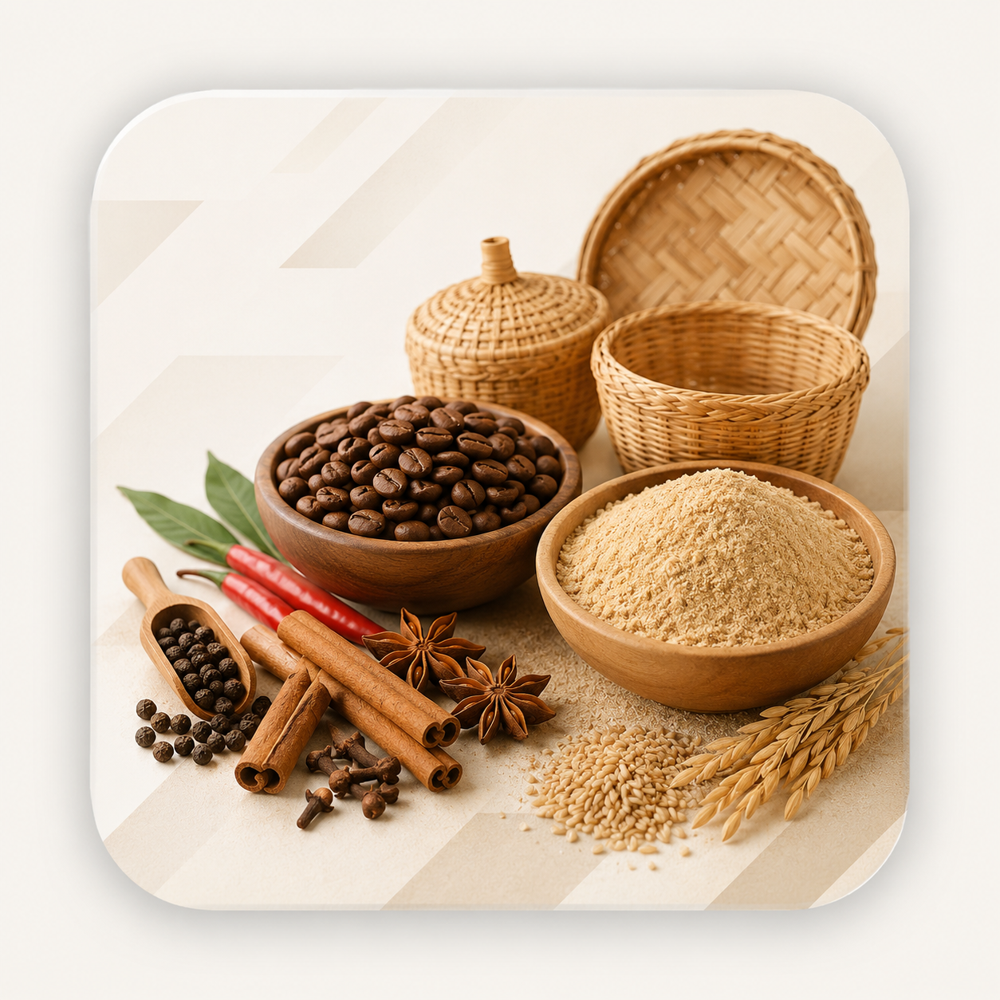
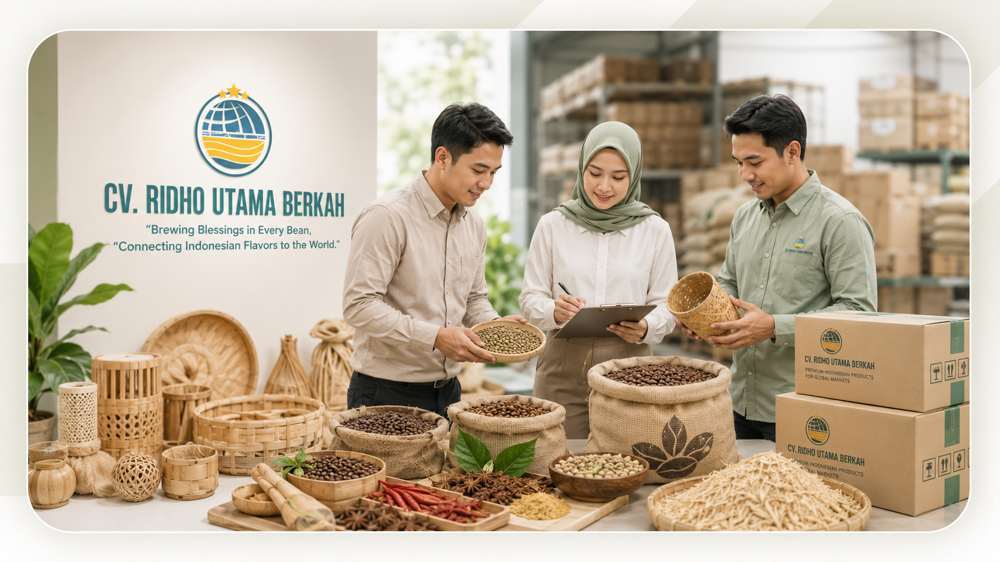

Product-Focused Sourcing
We discuss product availability, specifications, quantity, and buyer requirements before moving forward with export preparation.
About Ridho Utama Berkah
CV. Ridho Utama Berkah is an Indonesian export company supplying coffee beans, spices, rice husk, and bamboo handicrafts to international buyers. We help importers, wholesalers, distributors, roasters, ingredient buyers, and retailers source Indonesian products with responsive communication and practical export support.


Company Profile
Ridho Utama Berkah connects Indonesian product potential with global market demand through clear communication, product availability discussion, and export-oriented preparation.
Our main product focus includes Arabica and Robusta coffee beans, selected Indonesian spices, rice husk, and bamboo handicrafts. Each inquiry is handled based on product availability, buyer specifications, order quantity, destination country, packaging needs, and market requirements.
We aim to become a dependable sourcing and export partner for importers, wholesalers, distributors, roasters, ingredient buyers, and retailers looking for Indonesian products for international trade.
Vision & Mission
Ridho Utama Berkah is committed to building trusted export relationships through clear communication, responsible preparation, and selected Indonesian products.
Why Choose Us
We focus on clear product communication, buyer requirement alignment, and practical export preparation to support international sourcing needs.
We discuss product availability, specifications, quantity, and buyer requirements before moving forward with export preparation.
We help buyers understand product options, packaging needs, and shipment readiness with clear and timely communication.
We support product preparation, packing coordination, and shipment planning based on destination and buyer requirements.
Main Export Products
Ridho Utama Berkah focuses on selected Indonesian commodities and handicrafts for international trade.
Arabica and Robusta coffee beans from Indonesia for roasters, distributors, wholesalers, and international coffee buyers.
Selected spices such as cloves, cinnamon, nutmeg, pepper, and other Indonesian spices based on availability and buyer specifications.
Rice husk from Indonesian rice-based supply chains for buyers looking for natural agricultural by-products and related raw materials.
Eco-friendly bamboo handicrafts including baskets, decorative items, and handmade products crafted from Indonesian bamboo materials.
Brand Story
Our brand identity represents global connection, Indonesian origin, and our commitment to introduce selected Indonesian products to international markets with care and professionalism.

We combine product focus, export awareness, and responsive buyer communication to support a smoother sourcing experience for international customers looking for coffee, spices, rice husk, and bamboo handicrafts from Indonesia.
View ProductsFAQ
Common questions about Ridho Utama Berkah and our Indonesian export products.
CV. Ridho Utama Berkah exports Indonesian coffee beans, spices, rice husk, and bamboo handicrafts for international buyers.
We support importers, wholesalers, distributors, roasters, ingredient buyers, retailers, and other business buyers looking for Indonesian products.
Product preparation, specifications, and packaging options can be discussed based on product availability, order quantity, destination, and buyer requirements.
International buyers can contact us through the contact page to discuss product availability, specifications, quantity, packaging needs, and shipment destination.